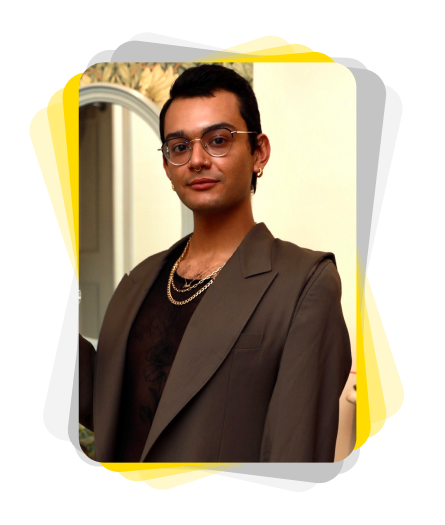

Hello, I’m Marvyn Alvarado!
I’m a certified UX/UI designer, from Colombia Engineering & UC Berkeley Universities, focusing on user centric design experiences.
I strive to solve complex problems that improve the lives of everyday people, while constantly absorbing and adapting to my environment.
My empathy focused approach ensures I bridge the gap between my clients, developers and users.
I draw on my past experiences as a professional pastry chef to create designs that are elegant yet functional, perform well under pressure, meet tight deadlines and manage teammates; while never forgetting about the customer's point of view.
UX Skills 
- User Personas
- Affinity Diagramming
- User Insights
- Empathy Mapping
- User Flows
- Prototyping
- User Testing
UI Skills 
- UI Grids & Patterns
- Color Theory &
Typography - Accessibility Design
- Information
Architecture - Interaction Design
- Responsive Design
Methods
- User Interviews
- Contextual Inquiries
- Diary Studies
- Focus Groups
- Online Surveys
Tools
- Paper & Pencil
- Figma/Adobe XD
- Miro
- Google Drive
- Slack
- Adobe Suite